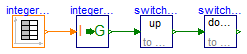

Simple series connection of two FMUs where enumerations are propagated
Extends from Modelica.Icons.ExamplesPackage (Icon for packages containing runnable examples).
| Name | Description |
|---|---|
| Reference solution in pure Modelica using exactly the same structuring as in Model WithFMUs | |
| Solution with FMUs | |
| For all models in this package an FMU must be generated | |
| Utility models needed in this test model |
 FMITest.SimpleConnections.SeriesWithEnumerations1.WithFMUsReference
FMITest.SimpleConnections.SeriesWithEnumerations1.WithFMUsReference
Reference solution in pure Modelica using exactly the same structuring as in Model WithFMUs

Extends from Modelica.Icons.Example (Icon for runnable examples).
FMITest.SimpleConnections.SeriesWithEnumerations1.WithFMUs
Solution with FMUs
Extends from Modelica.Icons.Example (Icon for runnable examples).